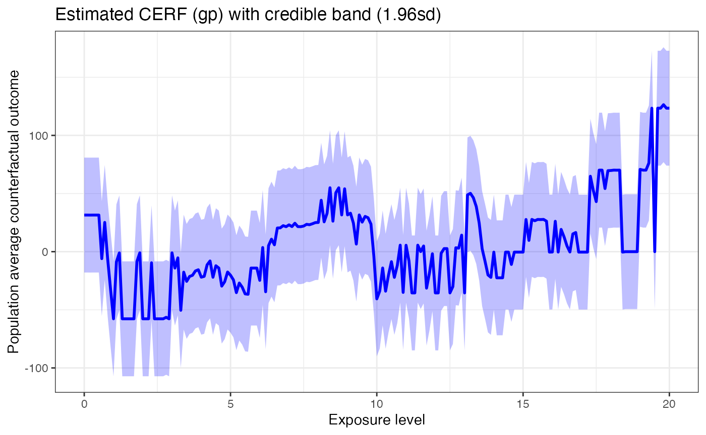
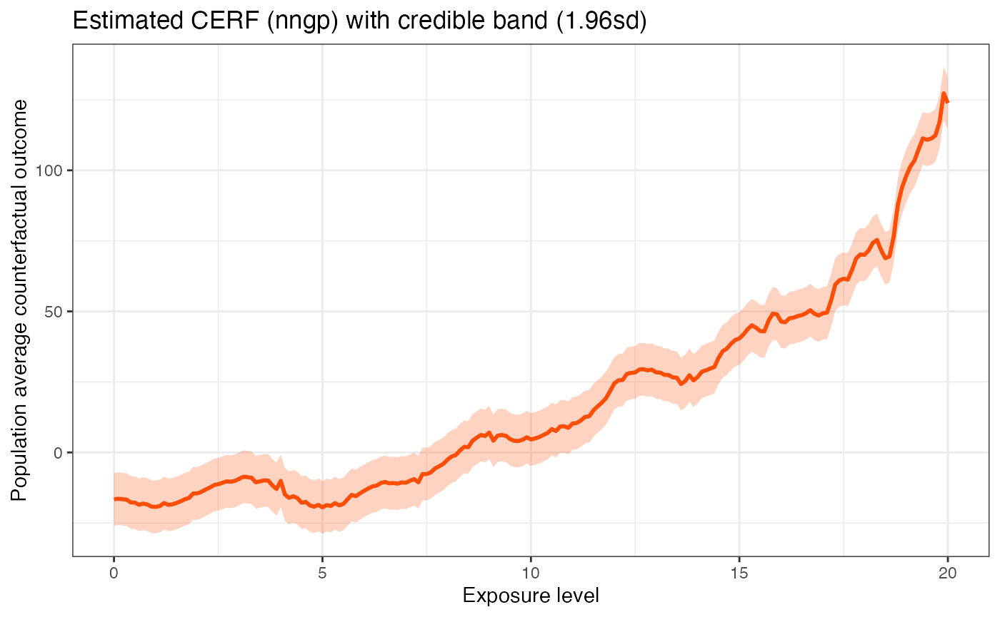

Installation
library("devtools")
install_github("NSAPH-Software/GPCERF", ref="main")Usage
Estimating GPS values
Input parameters:
cov_mt Covariate matrix containing all
covariates. Each row represents a sample, and each column is a
covariate.w_all A vector of observed exposure
level.
mydata <- generate_synthetic_data()
GPS_m <- train_gps(cov_mt = mydata[,c("cf1", "cf2", "cf3", "cf4",
"cf5", "cf6")],
w_all = mydata$treat,
sl_lib = c("SL.xgboost"),
dnorm_log = FALSE)
#> Loading required package: nnls
head(GPS_m)
#> GPS e_gps_pred e_gps_std
#> 1 0.01081022 8.197929 0.9413531
#> 2 0.08043211 5.114018 0.9413531
#> 3 0.19488618 6.077386 0.9413531
#> 4 0.40422488 12.200227 0.9413531
#> 5 0.02509882 -2.728654 0.9413531
#> 6 0.38230674 10.233231 0.9413531Estimating exposure response using Gaussian Processes
Input parameters:
data A data.frame of observation
data.
- Column 1: Outcome (Y)
- Column 2: Exposure or treatment (w)
- Column 3~m: Confounders (C)w A vector of exposure level to compute
CERF.GPS_m A data.frame of GPS vectors.
- Column 1: GPS
- Column 2: Prediction of exposure for covariate of each data sample
(e_gps_pred)
- Column 3: Standard deviation of e_gps (e_gps_std)params A list of parameters that is
required to run the process.
- alpha: A scaling factor for the GPS value.
- beta: A scaling factor for the exposure value.
- g_sigma: A scaling factor for kernel function (gamma/sigma).
- tune_app: A tuning approach. Available approaches:
- all: try all combinations of hyperparameters.
alpha, beta, and g_sigma can be a vector of parameters.
nthread An integer value that
represents the number of threads to be used in a shared memory
system.kernel_fn A kernel function. A default
value is a Gaussian kernel.
set.seed(129)
sim_data <- generate_synthetic_data(sample_size = 200, gps_spec = 3)
# Estimate GPS function
GPS_m <- train_gps(cov_mt = sim_data[,-(1:2)],
w_all = sim_data$treat,
sl_lib = c("SL.xgboost"),
dnorm_log = FALSE)
# exposure values
w_all = seq(0,20,0.1)
cerf_gp_obj <- estimate_cerf_gp(sim_data,
w_all,
GPS_m,
params = list(alpha = c(0.1,0.2,0.4),
beta=0.2,
g_sigma = 1,
tune_app = "all"),
nthread = 1)
plot(cerf_gp_obj)
Estimating exposure response using nearest-neighbor Gaussian Processes
Input parameters:
data A data.frame of observation
data.
- Column 1: Outcome (Y)
- Column 2: Exposure or treatment (w)
- Column 3~m: Confounders (C)w A vector of exposure level to compute
CERF.GPS_m A data.frame of GPS vectors.
- Column 1: GPS
- Column 2: Prediction of exposure for covariate of each data sample
(e_gps_pred)
- Column 3: Standard deviation of e_gps (e_gps_std)params A list of parameters that is
required to run the process.
- alpha: A scaling factor for the GPS value.
- beta: A scaling factor for the exposure value.
- g_sigma: A scaling factor for kernel function (gamma/sigma).
- tune_app: A tuning approach. Available approaches:
- all: try all combinations of hyperparameters.
- expand: Scaling factor to determine the total number of nearest
neighbors.
- n_neighbors: Number of nearest neighbors on one side.
- block_size: Number of samples included in a computation block. Mainly
used to balance speed and memory requirement. Larger is faster, but
requires more memory.
alpha, beta, and g_sigma can be a vector of parameters.
nthread An integer value that
represents the number of threads to be used in a shared memory
system.kernel_fn A kernel function. A default
value is a Gaussian kernel.
set.seed(19)
sim_data <- generate_synthetic_data(sample_size = 200, gps_spec = 3)
# Estimate GPS function
GPS_m <- train_gps(cov_mt = sim_data[,-(1:2)],
w_all = sim_data$treat,
sl_lib = c("SL.xgboost"),
dnorm_log = FALSE)
# exposure values
w_all <- seq(0, 20, 0.5)
cerf_nngp_obj <- estimate_cerf_nngp(sim_data,
w_all,
GPS_m,
params = list(alpha = c(0.1, 0.2),
beta = 0.2,
g_sigma = 1,
tune_app = "all",
n_neighbor = 20,
expand = 1,
block_size = 1e4),
formula = ~ . - 1 - Y - treat,
nthread = 1)
plot(cerf_nngp_obj)
Logging
The GPCERF package logs internal activities into the screen or
GPCERF.log file. Users can change the logging file name
(and path) and logging threshold. The logging mechanism has different
thresholds (see logger package).
The two most important thresholds are INFO and DEBUG levels. The former,
which is the default level, logs more general information about the
process. The latter, if activated, logs more detailed information that
can be used for debugging purposes. The log file is located in the
source file location and will be appended.